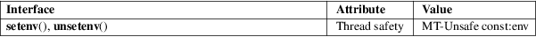

setenv − change or add an environment variable
Standard C library (libc, −lc)
#include <stdlib.h>
int
setenv(const char *name, const char
*value, int overwrite);
int unsetenv(const char *name);
Feature Test Macro Requirements for glibc (see feature_test_macros(7)):
setenv(),
unsetenv():
_POSIX_C_SOURCE >= 200112L
|| /* glibc <= 2.19: */ _BSD_SOURCE
The setenv() function adds the variable name to the environment with the value value, if name does not already exist. If name does exist in the environment, then its value is changed to value if overwrite is nonzero; if overwrite is zero, then the value of name is not changed (and setenv() returns a success status). This function makes copies of the strings pointed to by name and value (by contrast with putenv(3)).
The unsetenv() function deletes the variable name from the environment. If name does not exist in the environment, then the function succeeds, and the environment is unchanged.
setenv() and unsetenv() functions return zero on success, or −1 on error, with errno set to indicate the error.
|
EINVAL |
name is NULL, points to a string of length 0, or contains an '=' character. | ||
|
ENOMEM |
Insufficient memory to add a new variable to the environment. |
For an explanation of the terms used in this section, see attributes(7).

POSIX.1-2008.
POSIX.1-2001, 4.3BSD.
Prior to glibc 2.2.2, unsetenv() was prototyped as returning void; more recent glibc versions follow the POSIX.1-compliant prototype shown in the SYNOPSIS.
POSIX.1 does not require setenv() or unsetenv() to be reentrant.
POSIX.1 specifies that if name contains an '=' character, then setenv() should fail with the error EINVAL; however, versions of glibc before glibc 2.3.4 allowed an '=' sign in name.
clearenv(3), getenv(3), putenv(3), environ(7)